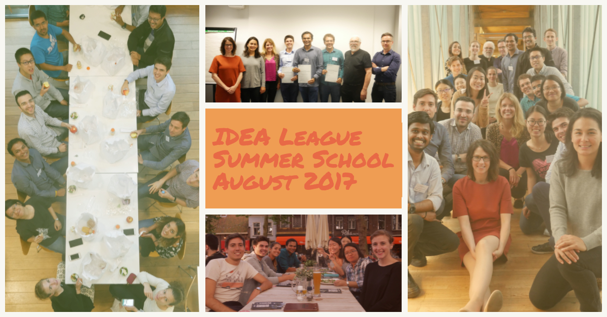

07 Nov 2017
Background
From 27–30th August, 2017, a summer school on “Responsible Robotics and AI” was hosted at the Technische Universiteit Delft. IDEA League Summer School is a collaborative summer programme for graduate students and PhDs of the respective member universities. The diverse group of participants included those from ETH Zürich, RWTH Aachen, Chalmers University of Technology, RWTH Aachen, Politecnico di Milano and TokyoTech.

What was this summer school about, and why is it important?
The topic, i.e Responsible Robotics and AI is truly an inter-disciplinary amalgamation of topics such as psychology, robotics, ethics, design and computer science. As robots become more omnipresent and a significantly larger part of our personal lives, several ethical questions confront us as humans. The summer school tried to discuss and address these questions by stimulating the students not only with the latest academic research, but also with dialogues, conversations and productive group-activities.
Who were the participants?
There were about 20 participants from IDEA League and ASPIRE League universities. Even more striking was the fact that the participants came from diverse and heterogeneous cultural backgrounds. There were participants from Italy, India, China, Vietnam, Portugal and Colombia to name a few. This ensured that the discussions always had different perspectives and it was extremely stimulating to think about various issues such as humanitarian aid, sex robots, robot laws from various points of view and appreciate the different factors involved in different situations. At the same time, there were friendly and informal discussions about different countries and their cultures, adding a whole new gamut of inter-cultural learning.
What were the talks about?
Since the topic is highly inter-disciplinary, the talks were also designed to give us different perspectives of the topic. Aimee Van Wynsberghe from TU Delft introduced the topic and provided an essential treatment of ethics and embedded it into the subject of robotics. Johanna Seibt from Aarhus University talked about how to attribute responsibility in robotics. Denise Soesilo and Tina Comes talked about the use of robots in humanitarian aid. Barry Fitzgerald talked about taking inspiration from superhero movies to develop more advanced robotic technologies. Noel Sharkey addressed the controversial issue of sex-robots, and the ethical issues involved with them.
Was it all work and no play?
Not at all. The summer school featured talks and group activities from morning until 5 pm. But after that, the participants had time every day to interact among themselves and explore the wonderful city of Delft and The Hague. We made the best use of this time and got a taste of Dutch culture. The beautiful markets of Delft and street concerts on the weekend were very exciting. At the same time, we also had a chance to try the famous ‘Fries and Mayonnaise’, dutch cheese and other varieties of food. On one of the evenings, the organisers hosted a social dinner in which all the participants and speakers participated. This gave us an opportunity to have informal discussions not only among ourselves, but also with the speakers. The food was delicious as well. On the final day of the summer school, we had student presentations on innovative subjects within the realm of robot ethics. The presentations were uniquely creative, and was well-appreciated by everyone.
01 May 2017
Hindustani Classical Music is a music form originating from the northern part of India. It was composed between 1500-900 B.C, making it widely regarded as one of the oldest music systems in the world. Traditionally, it has been enjoyed as not just a means for aesthetic pleasure, but a way of realizing inner happiness and self-release. There is also a strong sense of spirituality associated with Hindustani Music, which is essential for its study and practice. The most striking feature of Hindustani Music is its imaginative and improvised nature, which implies that there are no written script even while performing. There are no fixed compositions that the artist has to adhere to. In effect, the entire performance is an extempore, and the artist is playing the role of the singer, composer and the conductor all at the same time. The artist adheres to a concept called as the Raga. The Raga is the central melodic concept in Indian music. According to Rao et al., it is neither a tune, nor is it a modal scale, but rather a continuum with scale and tune as its extremes. Broadly speaking, it can be termed as a melodic mode or tonal matrix possessing a rigid and specific individual identity, yet bearing immense potential for infinite improvisatory possibilities. The raga serves as a basic grammar for composition and improvisation in Indian music.
The use of statistical and probabilistic tools in Musicology is not new. Temperley and Beran have very systematically laid down the probabilistic and statistical techniques used for music analyses respectively. The well-defined structure of a Raga makes the possibility of the usage of probabilistic and stochastic modeling techniques extremely favourable. Although the notes and intonations in an artist’s rendition are inherently unpredictable, there are some properties of the raga, e.g. the most dominant note (vadi), the second most dominant note (samvadi) and the identifying tonic pattern(pakad), which are more-or-less kept constant. This has led to the development of several approaches for automatic classification and clustering of ragas. The task of raga identification has been a subject of great curiosity among researchers. Given the fact that music is an art, and the plethora of improvisation possibilities that the artist can employ, even seasoned human listeners sometimes find it difficult to identify ragas. Indeed, some ragas have very minute differences, some have the same scale and notes, however the pattern of their usage and the corresponding emotions induced can be extremely different. One of the most notable examples is Raga Bhupali and Raga Deshkar. Some sophisticated automatic techniques have, however been fairly successful as they are able to infer a whole body of information about the raga using techniques such as Pitch Distribution Methods, Transposition Invariance Uniform Time Scaling and Vector Space Modeling.
My research and experiments over the course of the seminar on Computer Music, taken during my Master degree at RWTH, attempted to inquire into the different approaches used for feature extraction and statistical analysis of ragas, and how these are further employed for Tonic Similarity Calculation, Raga Identification, Mood Detection, Detection and Classification of Melodic Motifs and Automatic Music Composition. The full presentation can be accessed over here.
30 Apr 2017
Ever since the inception of Artificial Intelligence and Robotics as a discipline, the aim of researchers has been to make machines as intelligent as possible. In other words, to make machines function as if they had their own mind. Although this presents an exciting prospect for humanity, I believe that we would have to collectively shoulder the moral and ethical responsibilities associated with these efforts. In my opinion, creating machines with minds would be tantamount to giving birth to a whole new species, which we might or might not have full control over.
This exciting (and sometimes haunting) prospect makes Robotics and AI much more than a standalone discipline. It requires a culmination of thoughts, concepts and processes from several other sciences and arts, such as Psychology, Anthropology, Ethics, Law, Production Engineering and several others. This means that future robotics doesn’t just have to ensure good design and high productivity, but it also needs to take into account all the other humane and ethical factors. Some intriguing questions that immediately come to mind are: Should Robots have rights? Should there be a maximum time limit for which they can be put to work? For a sustainable and harmonious future, we would need answers to such questions, and this would require knowledge about not just artificial intelligence, but how it intimately interacts with the other scientific fields mentioned above.
10 Dec 2014
Plain and simple, optimization is essentially the art, science and mathematics of choosing the best among a given set of finite or infinite alternatives. It gets as close to real life as it can. Optimization Problems are one of the most important as well as critical problems faced by man, given the basic principle of Economics that our wants are endless, and resources, finite. It’s an inter-disciplinary subject, cutting across Economics, Mathematics, Engineering and Natural Sciences.
According to Roman Legend, the earliest possible mention of an optimization problem was in 500 BCE in the tale of Princess Dido. She was fleeing from the prosecution of her brother and a piece of land on the Mediterranean coast caught her fancy. She made a deal with the local leader. She requested him to cut a bull’s hide into thin strips and tie them up and enclose as much land as one can with it. In modern day language the problem is mathematically stated as follows - Among all closed curves of a given length find the one that encloses maximum area. This is called the Isoperimetric problem.
Great minds like Lagrange, Gauss, Newton, Bernoulli and Euler have all had significant contributions to the Optimization Theory, but a significant impetus was provided to it with the development of Linear Programming as an Optimization Technique. A linear programming problem consists of linear functions as objective and constraints. It became apparent that linear programming has tremendous applications in economics, military operations, business, engineering, etc. It was the development of the simplex method for solving linear programming problems that became the turning point of the subject.
In the field of Computer Sciences, Algorithmics deals with the problems of optimization and how to devise the most optimal solution. There are several algorithms which have been developed over the years to tackle problems of the kind. Russian Novelist Ivan Turgenev said - Whatever man prays for, he prays for a miracle. Every prayer reduces itself to this—Great God, grant that twice two be not four. This would make absolute sense to a computer scientist, who knows that if optimization problems are tried to be solved using the Brute-Force or Divide-and-Conquer mechanism, it would lead to exponential complexity, which is computationally the most tedious calculation possible. Even for an input size as small as 40, and with ample processing power, the solution may take several minutes, or probably hours to compute.
In the above situation, Richard Bellman came with an alternative in the 1950s, which we now know as ‘Dynamic Programming’. On analysis, it is not tough to show that Dynamic Programming yields the solution of several optimization problems in Polynomial Time, which is a massive leap from the exponential time complexity given by its Brute-Force counterpart.
Dynamic Programming believes that optimal solutions to a problem incorporate optimal solutions to its related sub-problems, which may be solved independently. It works as follows: having observed that a naïve recursive solution is inefficient because it solves the same sub problems repeatedly, we arrange for each sub-problem to be solved only once, saving its solution. If we need to refer to this sub-problem’s solution again later, we can just look it up, rather than recompute it. Dynamic Programming thus uses additional memory to save computation time.
Because of its efficiency and ease of solving computationally demanding optimization problems, Dynamic Programming has retained itself as a Programmer’s Choice, and search engines like Google, social networks like Facebook and Twitter all have numerous usages of Dynamic Programming at each stage of their coding process.